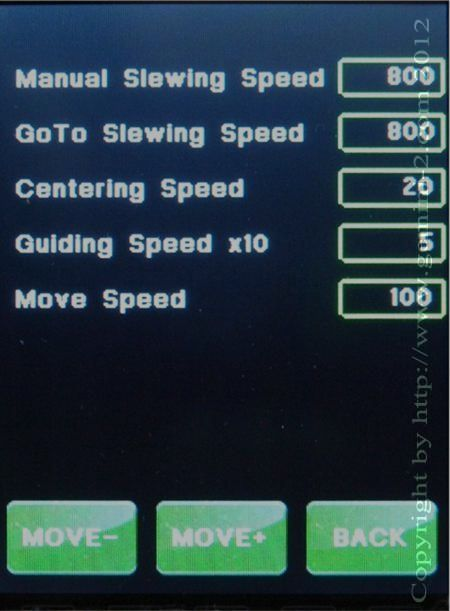

| Interactive Hand-Controller Menus - click on green button to Navigate |
|  |
This menu lets you select the actual speed for each of the available mount speeds. For larger loads, I recommend setting the slew speed to 400 or 600 These speed can be changed from the main screen with the Speed button. The MOVE- and MOVE+ buttons will decrease or increase Move Speed. The Guide Speed x5 box is the default guide rate. The guide rate is 10 times the Sidereal rate. Guide rate of 5 is equivalent to 0.5x Sidereal. Valid selections are 2 through 8. To change any of the speeds, touch the appropriate box. You will see a screen that lets you enter the speed using a numeric keypad. |